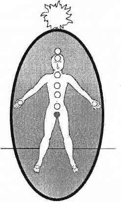

BİRİNCİ ÇAKRA KUNDALİNİ ÇAKRASI
Bu parlak kırmızı renkli, etki edici çakra (tüm tek sayılı çakralar dışa dönük, etki edici; tüm çift sayılı çakralar içe dönük, kabul edicidir) omurganın en alt noktasında kadınlarda vajinanın içinde erkeklerde testislerin tam üstünde bulunur. Birinci çakra (kimileri kök çakra der) temel hayatta kalma çakrası; cinsel dürtü ve bedensel hayat enerjisi çakrasıdır.

Birinci çakra herhangi bir salgı bezi ile bağlantılı değildir. Bunun yerine sekizinci çakra ile birlikte çalışarak fiziksel bedenin enerji regülatörlüğünü yapar. Eğer birinci çakrada sorunlar varsa çakra sistemi ve endokrin hormon sistemi dolaylı olarak etkilenir.
Endokrin dengesizliği için sorun çözme kılavuzuna bakın.
Birinci çakra ayak tabanlarındaki çakralara bağlıdır. Eğer bu bağlantı sağlıklı değilse topraklanma çok zor olabilir. Birinci çakra çalışmalarının hepsine ayak çakraları da dahil edilmelidir. Bu iki çakra arasındaki bağın önemini daha derinlemesine görebilmek için lütfen ayak çakraları ile ilgili bölümü okuyun.
Bu çakranın enerjisi çok güçlüdür. Birinci çakra ya da kundalini enerjisi yukarı doğru ve tüm bedende gezdiği zaman, güçlü yaşam enerjisi tehlike karşısında fiziksel yaşamı garanti eder. Ani güç gösterilerinden birinci çakra sorumludur. İnsanlara tehlikeden koşarak kaçma ya da tehlikeye karşı koyma gücünü bu çakra verir.
Spiritüel uyanış sırasında bazen kundalini enerjisi yukarı doğru çıkar. Bu yüzden pek çok spiritüel topluluk tehlike olmadığı ya da uyanış olmadığı zamanlarda bile kundalinin yukarı doğru akacağı yöntemler geliştirmişlerdir. Kundalini yukarı doğru aktığında bir alev huzmesi ya da sokmaya hazır bir kobra gibi diğer altı ana çakradan büyük bir güçle geçer.
Bu yukarıya akış sonucunda hissedilenler kokain çekince hissedilen kafa bulma, yükselme duygusu ile aynıdır. Kişi kendini yenilmez, çok uyanık, fiziksel olarak farkında ve gıdaya, uykuya, yaşam için gerekli şeylere tamamen kayıtsız hisseder. Bu güzel bir duygudur ama kundalini enerjisini böyle kullanmanın bazı yan etkileri vardır. Yerinde duramayan, topraklanamayan, yorgunluktan canı çıkmış sayısız hasta bana kundalininin yönüne geri çevrilmesi için başvurur. Az bir miktar birinci çakra enerjisi çok uzun yol gider. Kısacık bir kundalini yüklemesinde bile beden fazla enerjiyi kaldıramaz, yemek ve uyku yoksunluğu da cabası.
Kundalini meditasyonları ileri düzeyde ve çok odaklanmış yogiler tarafından uygulanır. Ancak Batı’da öğretilen kundalini, yogiler tarafından ya da yogilere öğretilmemektedir. Burada kundalini genellikle bir yenilenme ilacı olarak kullanılmaktadır. Kundalini enerjisini kullanma fikri başlangıçta çok harika görünse bile sonucu neredeyse felakete dönüşür. Eğer kişi kundaliniyi nasıl yükselteceğinden pek emin değilse o zaman nasıl yatıştıracağından da fazla emin olamaz. Meditasyondan çıkmak ve yeniden yemek yiyebilmeye başlamak her zaman yeterli olmaz.
Garip olan bazı kültler şarkı söyleyip oruç tutarak ve uyku uyumayarak kundaliniyi yükseltmeye çalışır; çünkü kundalini, açlık ve uykusuzluk sırasından korunma için kendi kendini harekete geçirir. Spiritüel ya da psişik enerji konusunda tecrübesi olmayan Batılılar için kundalini tecrübesi fazladır. Birinci çakralarının gücünü anlamak yerine çoğu spiritüel arayış içinde olan pek çok insan kendilerini kültlere ve kült deneyimlerine kaptırırlar. Eğer kişiler kendi enerjilerini deneyimleme ve keşfetme özgürlüğüne sahip değillerse kültler, gurular ve başka şarlatanlar için kolay bir yem haline gelirler.
Kundalini pek çok sorun çıkarmasına karşın birinci çakra hemen tepki verir. Yoldan çıkmış da olsa; uzun zamandır yukarıya ve başın yukarısından dışarıya doğru akıyor da olsa, tekrar yoluna sokulması çok kolaydır.
Gördüğüm en ciddi kundalini vakalarından biri kült üyesi bir kadındı. Birinci çakrasını yukarıya ve dışarıya o kadar uzun zaman yönlendirmişti ki, cildi yanmıştı. Kundalini ateşi derisini etkilemeye başlamıştı. Bana tedaviye geldiğinde onu toprakladım ve başının üzerinde mavi bir ay yarattım. Bedenine geri döner dönmez ve kundalini enerjisi üst çakralarından teker teker temizlenmeye başlar başlamaz ardı ardına kriz geçirmeye başladı. Çalışmaya devam ettim ve birinci çakra enerjisi yerine döndü. Daha sonra büyük hıçkırıklarla ağlamaya başladı. Çalışmaya devam ettim nihayet birinci çakrasında topraklanmaya başladı ve enerjisi dengelendi. Üst çakraları kendi enerjileri yerine birinci çakra enerjisi ile titreşmekte olduğu için şekilleri bozulmuş ve zarar görmüştü ama kısa zamanda eski hallerine döndüler.
Kadın daha sonra bana kendisini rüya olarak başlayan, sonra da halüsinasyonlarla dolu bir kabusa dönüşen uzun bir uykudan uyanmış gibi hissettiğini söyledi. Kendisini baştan çıkarılmış ve bir başka dünyaya hapsedilmiş gibi hissetmişti. Katılmış olduğu kült birkaç yıl sonra ardında pek çok yaralanmış insan bırakarak kötü bir şekilde ortadan kaybolmuştu. Zamanında ayrılmış olduğu için sevinmişti ama zamanında yeni ailesi olduğuna inandığı kült üyeleri için de çok üzülmüştü. Cildindeki yanıklar birinci tedavinin ertesi günü yok oldu; normal hayatına daha bilge ve odaklanmış bir birey olarak geri dönmeyi başardı.
Eğer kendi haline bırakılırsa birinci çakra bomba gibi patlama kapasitesi olan gücünü, tehlike, hastalık ve depresyon durumlarıyla tetiklenerek kendisi açar ve kapatır. Bu durumlarda birinci çakra enerjisini yukarıya yönlendirir ve diğer çakralara bir nevi hazır ol çağrısı yapar. Birinci çakra ihtiyaç zamanlarında kendisini yukarıya yönlendirdiği gibi yardım almadan zamanı gelince gene kendisini yönlendirir. Kundalini enerjisi kendi kendisinin efendisidir. Nasıl çalıştığı ve sorumlulukları hakkında bizim bildiğimizden çok daha fazla şey bilir.
Kundalini ile bir oyuncak gibi oynamamanızı; onu ilaç gibi görmemenizi ya da spiritüel farkındalık için kestirme bir yol olarak kullanmamanızı öneririm. Kundalininin gücüyle oynamak bir süre eğlenceli olabilir ama bu kundalinin enerji seviyesinde uzun zaman titreşemeyen diğer çakraları mahveder. Enerji patlaması sadece tek bir renk (kırmızı) ve enerjinin tek bir frekansı ile kısıtlanan auraya da zarar verir. Bu iki çok ciddi soruna ek olarak birinci çakra enerjisi yukarıya doğru akarken topraklanmak olanaksızdır.
KAPALI YA DA AÇIK BİRİNCİ ÇAKRA
Birinci çakrada bir sorun olduğunda genellikle ayak çakralarında da sorunlar oluşur. Ayak çakraları birinci çakrayla doğrudan ilişkilidir ve bağlı oldukları birinci çakranın tedavi sürecine bu çakralar da katılmalıdır. Sağlıklı ayak çakraları birinci çakranın en büyük destekçisidir. Ayak çakraları daha ileride detaylı olarak açıklanacaktır.
Çok büyük ve açık bir birinci çakranın anlamı hayatta kalmaya çalıştığınıza işarettir; mali, duygusal ve fiziksel anlamda olabilir bu hayatta kalış. Eğer bir felaketin ortasındaysanız birinci çakranızın büyük kalmasına izin verin ki size yardımcı olabilsin. Ancak bu durumda kundalininin yukarıya doğru akması muhtemeldir, gözünüz açık olsun. Tehlike geçtiğinde, birinci çakranız bu akışı kendisi durduracaktır. Eğer durdurmazsa ve kundalini diğer çakralara bir günden uzun bir süredir akmaya devam ediyorsa o zaman sorun çözme kılavuzundaki kundalini tedavisi bölümünü okuyun. Şayet bir tehlike içinde değilseniz o zaman birinci çakranız yeni bir farkındalık seviyesine doğru yelken açmış olabilir. Bu harika bir şeydir ama ben birinci çakradan gözünüzü gene de ayırmamanızı öneririm.
Birinci çakra enerjisinin tehlike zamanında size yardım etmesinin nedeni onun çok cesur olmasıdır. Ancak tedavi ederek bir kez uyandırdığınız birinci çakranızın sizin rehberliğinize ve liderliğinize gereksinimi vardır. Kendisini azıcık iyi hissetse aniden maraton koşmaya karar verebilir, spiritüel olarak tabii ki. Her sorununuzu çözebileceğini sanarak kendisini sürekli açık ve korunmasız bırakabilir. Ancak, sürdürdüğünüz hayat ve içinde bulunduğunuz çevre henüz tam anlamıyla sağlıklı olmayabilir. Çevrenizden birinci çakranıza gelebilecek tehlikelere karşı onu koruyun; koruyucu üçüncü çakranızı çalıştırın. Birinci çakranızın çok açılan kenarlarını 5 ila 7 cm boyuna indirin. Eğer sürekli tehlike içinde yaşıyorsanız birinci çakranız doğal olarak daha büyük boyutlarda bir açıklığa alışmış olabilir. Çakralarınızın biçimini değiştirmek için görsel bir desteğe ihtiyaç duyacak olursanız, çakraların fotoğraf makinesi objektifleri gibi açılıp kapandıklarını bilin.
Kapalı bir birinci çakra, bu çakranın hayat enerjisini kesmek istediğiniz ya da onu görmezden geldiğiniz anlamına gelir. Kapalı birinci çakralar derin fiziksel ya da duygusal acı içinde olan ama yaşamaya değil yaşamlarını ve almaları gereken dersleri şiddetle reddeden kişilerde bulunur. Birinci çakranın kapalı olması aynı zamanda dürüst ve duygusal olmayan cinselliği reddetmek anlamına da gelir. Birinci çakrayı kapamak her sorundan (özellikle cinsel sorunlardan) kaçmanın iyi bir yolu gibi gözükse bile değildir. Birinci çakrayı kapamak sadece topraklanmayı ve çakra sisteminin çalışmasını engeller.
İnsanlara acı içindeyken çakraları kapamanın normal olduğunu ama sorunlarla ilgili çakraları kapamanın sorunları çözmek yerine kat be kat artırdığını anlatırım. Birinci çakrayı dengelemeye çalışırken hayatta kalma, cinsellik ve topraklanma ile ilgili sorunlar yaşanması normaldir. Bütüne ait bazı şeylerle uğraşmak istemiyoruz diye çakramızı cezalandırmamız aptallıktır. Hayatımız mükemmel olmadığı için kendimizin ya da çakralarımızın cezalandırılmamasını sağlamak bizim sorumluluğumuzdur. Sorunlar ne olursa olsun tüm çakralarımızı çalışır durumda tutmamız en doğrusudur.
Yaşamsal bir tehlike içinde olmadığınız halde kapalı bir birinci çakranız varsa çakranız kendisini onarım için kapamış olabilir. Sağlıklı ve dengeli bir çakra sisteminde çakralar zaman zaman kendilerini yıpratan kötü alışkanlıklar ya da sözleşmelerden kurtulmak için kısa bir süre kapanırlar.
Eğer birinci çakranız tatildeyse kendinizi ve diğer bütün çakralarınızı tebrik edip hepsine birer merhaba hediyesi verin. Çakralarınızdan biri böyle güven içinde tatile çıktığı zaman çakra sisteminiz içinde bir bütün olarak iletişimi sağlamışsınız demektir! Çakra sisteminizi birinci çakranızın önüne ve arkasına birer nöbetçi koyarak destekleyin. Bu nöbetçiler birinci çakranızı koruyup tedavi edecektir; birinci çakranız da hazır olduğunda kendisini açacaktır. Genellikle de bir haftadan az bir zamanda.
Eğer çakranız bir haftalık süre sonunda açılmadıysa ona, neye ihtiyacı olduğunu sorun. Genellikle birinci çakranın daha iyi bir nöbetçiye ve aura sınırlarının daha iyi tanımlanmasına ya da yeni bir topraklanma kordonuna gereksinimi vardır. Komşu çakralardan birinin tedavi edilmesi de gerekiyor olabilir. Bu ana çakraya, yeniden açılması için kendisine ne gerektiğini söylediğinde güvenin.
SAĞLIKLI BİRİNCİ ÇAKRANIN ÖZELLİKLERİ
Birinci çakra olması gereken açıklıkta, tanımlanmış ve serbestçe dolaşan yakut kırmızısı enerji ile dolu olduğunda topraklanma kordonu da sağlıklı ve tanımlanmış demektir.
Topraklanmanın tüm olumlu etkilerinin ötesinde, birinci çakrası sağlıklı olan bireyler bedenleriyle ve cinsellikleriyle iletişim halindedirler. Kendileri için iyi olan gıda, barınak ve seks partnerlerini, verdikleri kararın doğruluğundan emin olarak seçebilirler. Sağlıklı birinci çakrası olan insanların sağlam bir duruşları, güçlü yürüyüşleri vardır ve nerede oldukları, arabalarını nerede bıraktıkları, anahtarlarının ve enerjilerinin nerede olduğu konusunda sağlam fikirlere sahiptirler.
Bu insanlar kendilerini odaklanmış, güçlü ve önlerine çıkabilecek her sağlık sorunu ile baş edebilecek yeterlilikte hissederler. Hastalık onlar için, bedenleri eski ve istenmeyen enerjiyi temizleyene kadar geçirecekleri bir süreçten ibarettir.